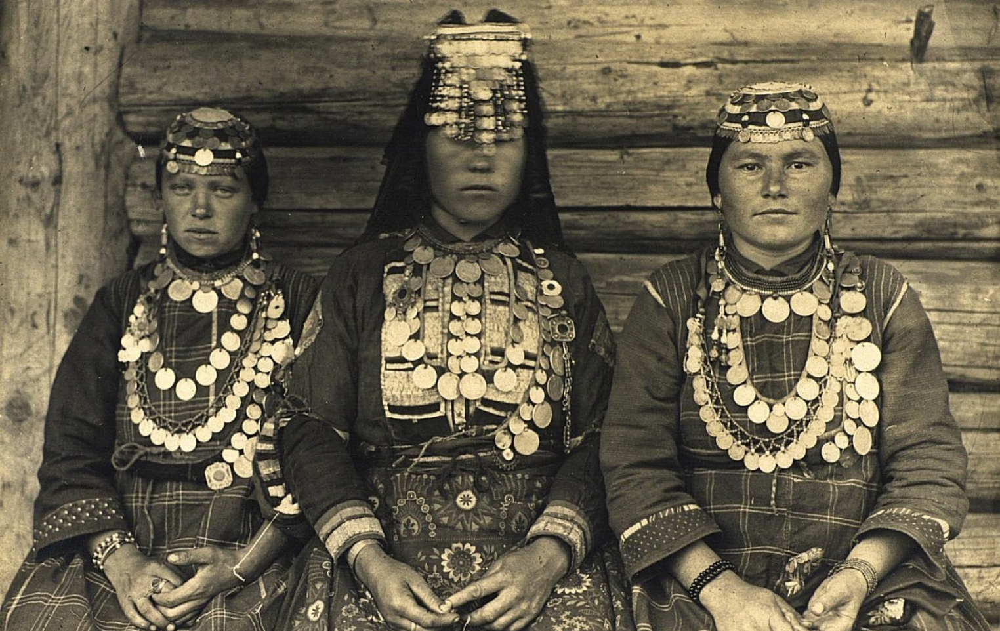
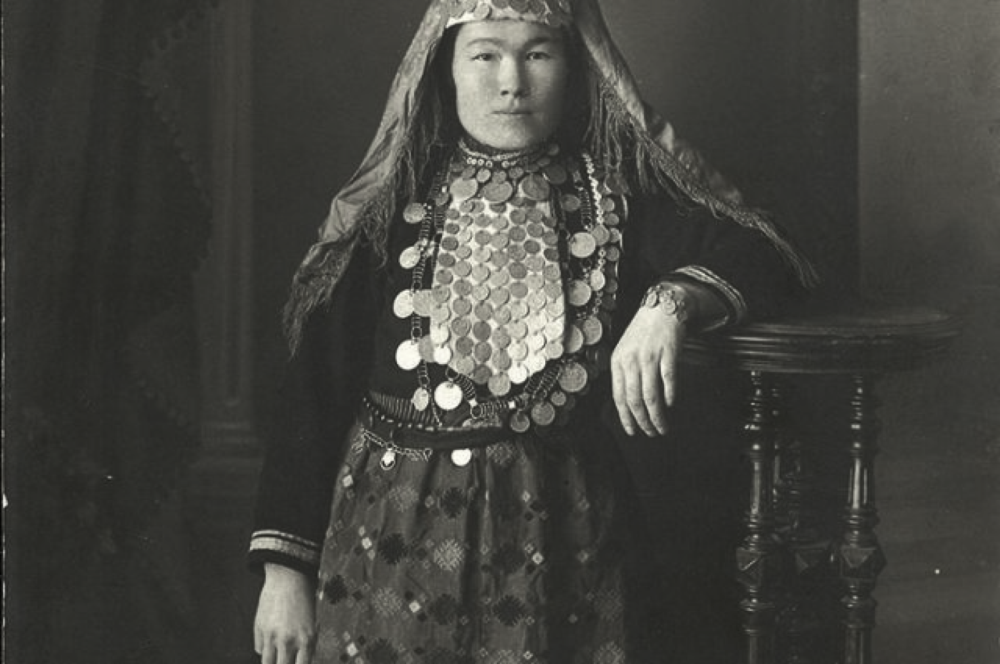
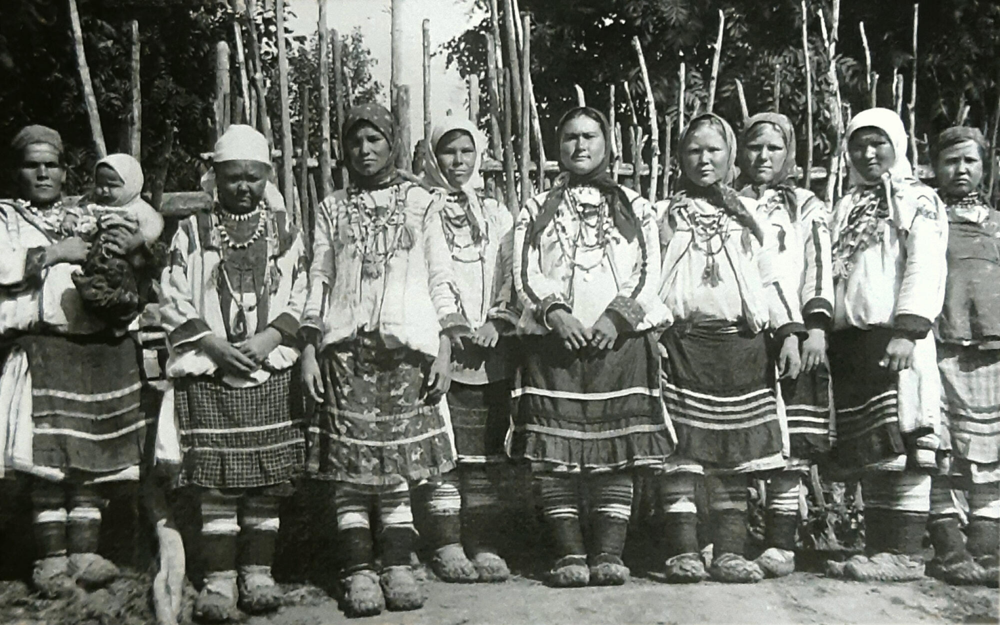

Вернуться на главную
Северные удмурты и их ткачество
Северные удмурты - это народ с богатой историей и удивительной культурой, проникнутой духом традиций и силой природы. Их ткачество является важной частью этой культуры, отражая удивительную красоту северной природы и глубокие духовные устремления этого народа.
Ткачество северных удмуртов отличается утонченностью узоров, использованием натуральных материалов и традиционных техник, передающих особое восхищение перед природой, животным миром и духовными символами. Каждое изделие, созданное с помощью удмуртского ткачества, словно рассказывает историю этого народа, его связь с землей и культурными традициями.
Северные удмурты с любовью и преданностью передают свое наследие через ткачество, сохраняя уникальность и красоту этого искусства для будущих поколений. Их ткачество не просто ремесло, это искусство, которое дарит радость и вдохновение, объединяя людей и сохраняя духовное богатство этого удивительного народа.
Южные удмурты и их ткачество
Южные удмурты – это народ, обладающий утонченным вкусом, глубоким уважением к своим традициям и захватывающим духом творчества. Их ткачество – это воплощение красоты и изящества, которые пронизаны мудростью предков и любовью к родной земле.
Традиционное удмуртское ткачество южных удмуртов привлекает своей неповторимой красотой узоров, вдохновленных природой и символикой народа. Каждое изделие, созданное их умелыми руками, становится уникальным произведением искусства, передающим всю глубину культурного наследия этого удивительного народа.
Южные удмурты через свое ткачество сохраняют связь с историей и духовностью своего народа, передавая уникальные традиции и знания о природе, обычаях и верованиях. Их умение создавать прекрасные текстильные изделия не только отражает их мастерство и творческий потенциал, но и служит важным способом сохранения и преемственности культурного наследия южных удмуртов.
Центральные удмурты и их ткачество
Центральные удмурты - это этническая группа, проживающая в центральной части республики Удмуртия. Они известны своим уникальным культурным наследием, включая традиционное ткачество. Искусство ткачества удмуртов имеет древние корни и отличается красочностью, оригинальными узорами и техникой исполнения. Удмуртские ткачи создают удивительные изделия, отражающие их национальный характер и традиции, которые передаются из поколения в поколение. Ткачество удмуртов является важным элементом культурного наследия этого народа, а их работы привлекают внимание ценителей искусства и ремесел со всего мира.
